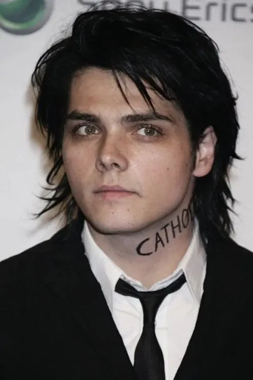
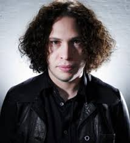
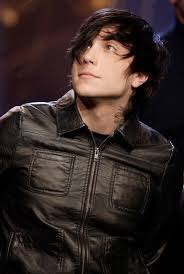
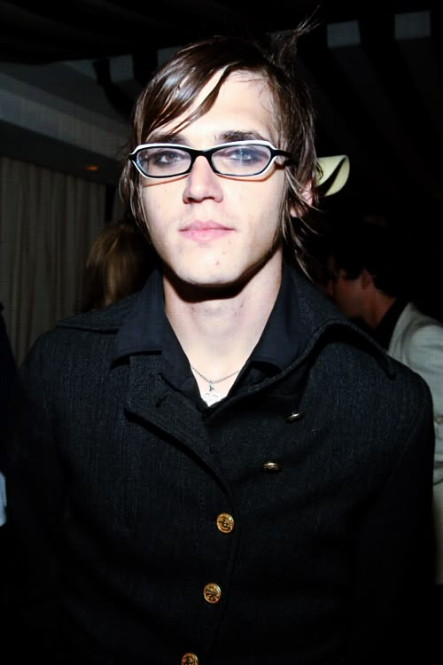

Integrantes
Formação atual de integrantes:
Gerard Way
- Nascimento: 9 de abril de 1977 (Nova Jersey, EUA)
- Função: Vocalista, letrista e cofundador da banda
- Curiosidades: Além de músico, é criador da série The Umbrella Academy e autor de quadrinhos. Seu estilo vocal dramático e suas letras profundas são marcas registradas do MCR.
Ray Toro

- Nascimento: 15 de julho de 1977 (Nova Jersey, EUA)
- Função: Guitarrista principal e backing vocal
- Curiosidades: Conhecido por seus solos poderosos e influências que vão do metal ao Queen. Também participa de projetos solo.
- Nascimento: 31 de outubro de 1981 (Nova Jersey, EUA)
- Função: Guitarrista rítmico e backing vocal
- Curiosidades: Entrou na banda em 2002. Tem projetos paralelos como Frank Iero and the Future Violents e uma carreira solo agressiva e experimental.
- Nascimento: 10 de setembro de 1980 (Nova Jersey, EUA)
- Função: Baixista
- Curiosidades: Escreveu um livro ("Electro Boy") sobre sua vida com transtorno bipolar. Seu estilo minimalista no baixo ajuda a definir o som do MCR.
Frank Iero

Mikey Way

Voltar para a página inicial